Opciones de herramientas
Herramientas > Opciones > Herramientas ajusta cómo se comportan las herramientas y qué objetos nuevos dibujan. La mayoría de estos valores también están en la barra de propiedades de cada herramienta.
Selección
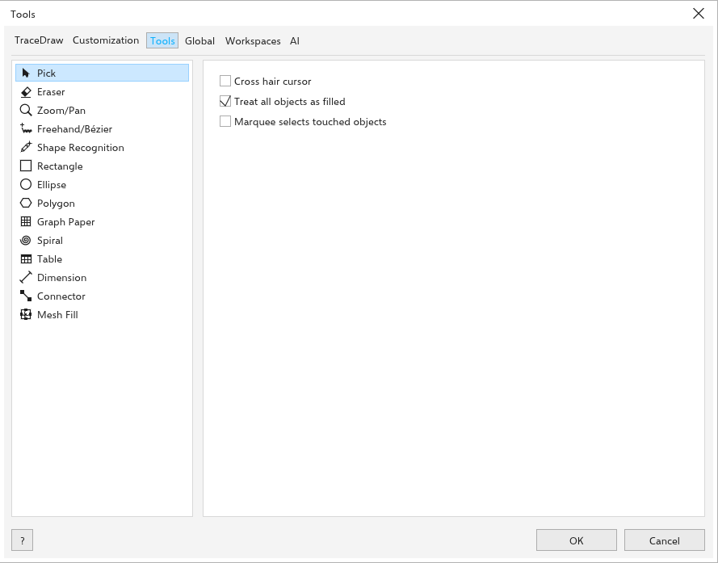
- Cursor en cruz: el puntero es una cruz.
- Tratar todos los objetos como rellenos (activado): hacer clic dentro de un objeto sin relleno lo selecciona.
- El marco selecciona los objetos que toca (desactivado): un marco de selección también selecciona los objetos que solo toca; Alt selecciona entonces solo los que están por completo dentro.
Borrador
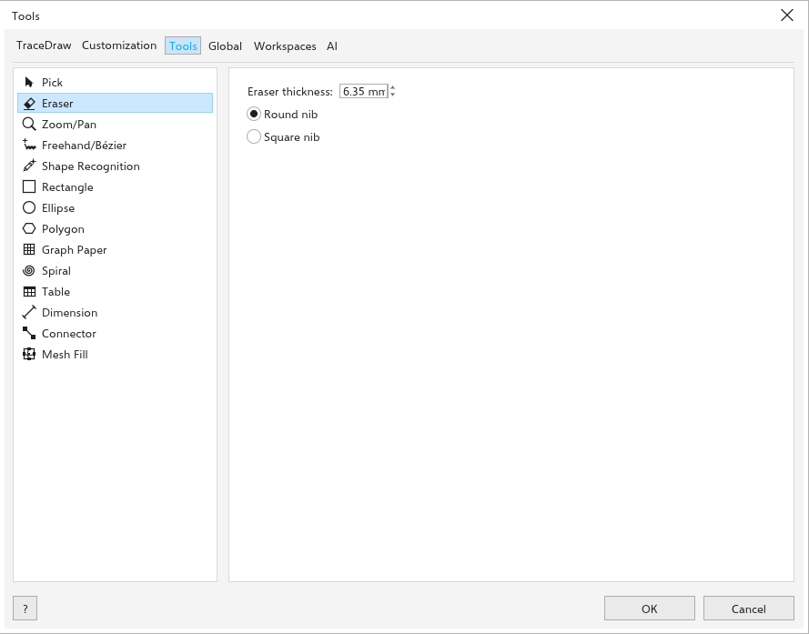
Grosor del borrador (6,35 mm de forma predeterminada), y Plumilla redonda o Plumilla cuadrada.
Zoom y desplazamiento
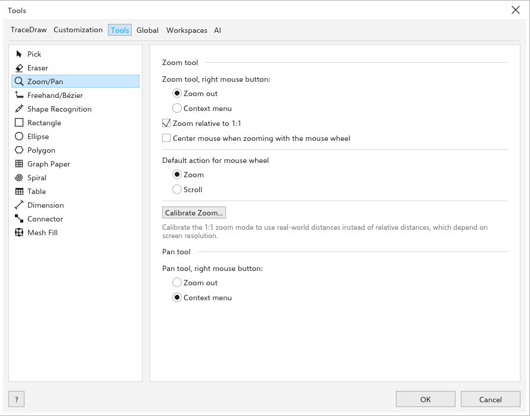
- Herramienta Zoom, botón derecho del ratón: Alejar (opción predeterminada) o el Menú contextual.
- Acción predeterminada de la rueda del ratón: Zoom o Desplazar.
- Zoom relativo a 1:1 (activado): el zoom 100% es el tamaño real con la resolución de pantalla calibrada; desactivado, son 96 píxeles por pulgada.
- Centrar el ratón al hacer zoom con la rueda del ratón (desactivado): un zoom con la rueda lleva el punto bajo el puntero al centro de la vista, y el puntero con él.
- Herramienta Mano, botón derecho del ratón Alejar o el Menú contextual (al principio).
Mano alzada/Bézier
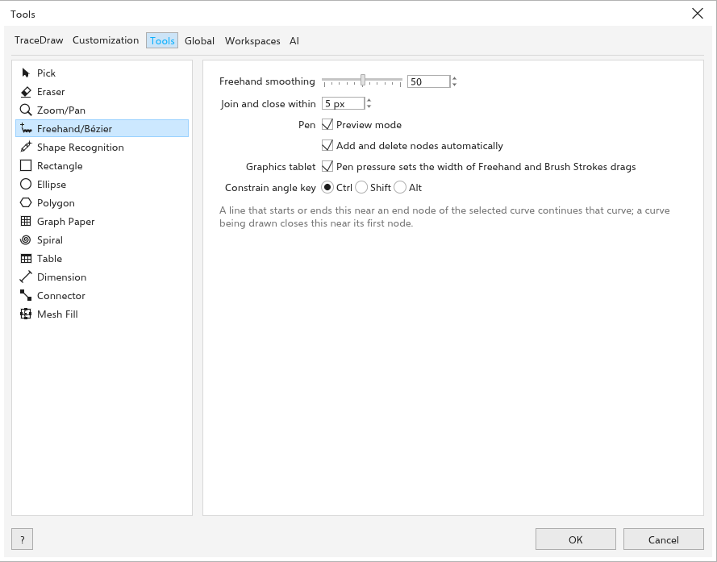
- Suavizado a mano alzada: de 0 a 100 (50 de forma predeterminada).
- Unir y cerrar a menos de: a qué distancia de un nodo final debe empezar una línea para continuar la curva (5 píxeles de pantalla de forma predeterminada). Vea Continuar una curva.
- Modo de vista previa y Añadir y eliminar nodos automáticamente (ambas activadas) para la herramienta Pluma; vea Pluma.
- Graphics tablet: Pen pressure sets the width of Freehand and Brush Strokes drags (activada); vea Dibujar con una tableta gráfica.
Reconocimiento de formas
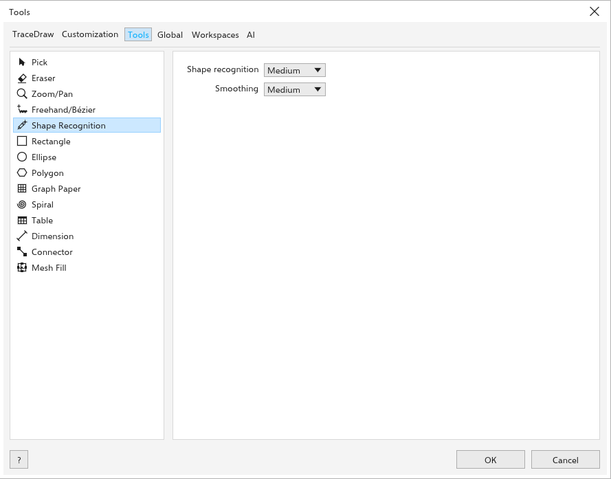
Reconocimiento de formas y Suavizado de la herramienta Reconocimiento de formas, de desactivado a máximo, como en su barra de propiedades.
Rectángulo
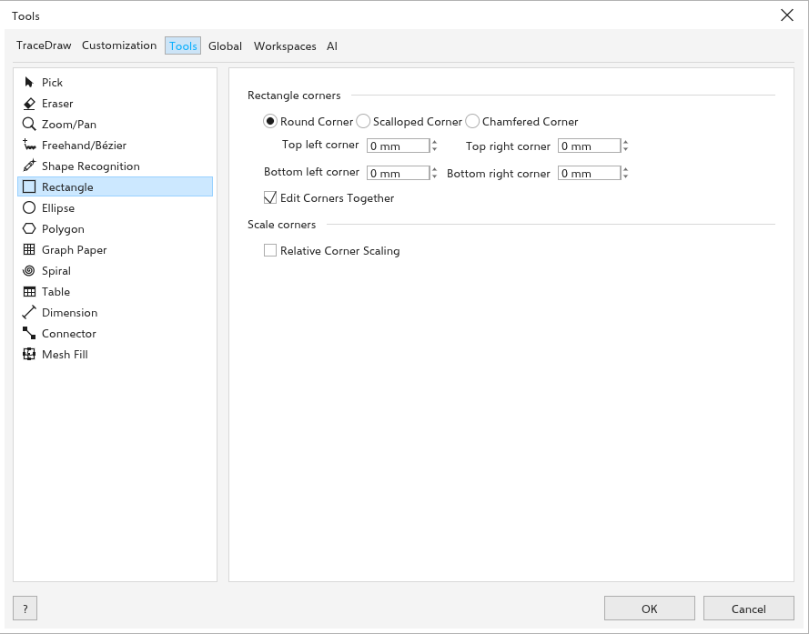
Esquinas del rectángulo: Esquina redondeada, Esquina festoneada o Esquina biselada, los cuatro tamaños de esquina y Editar esquinas juntas. Escalar esquinas: Escala relativa de esquinas.
Elipse
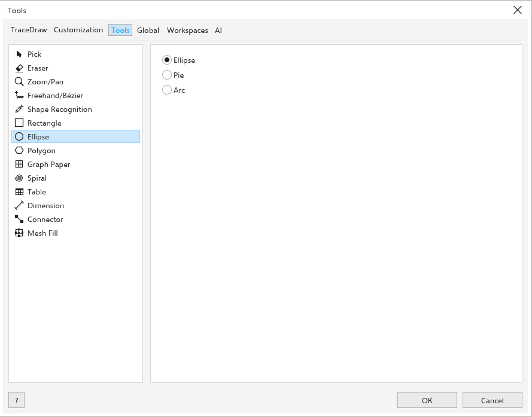
Elipse, Sector o Arco, con el Ángulo inicial y el Ángulo final.
Polígono
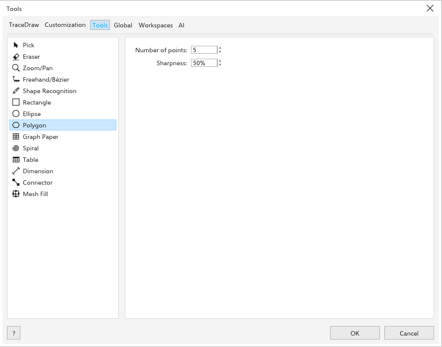
Número de puntos y Nitidez.
Papel cuadriculado
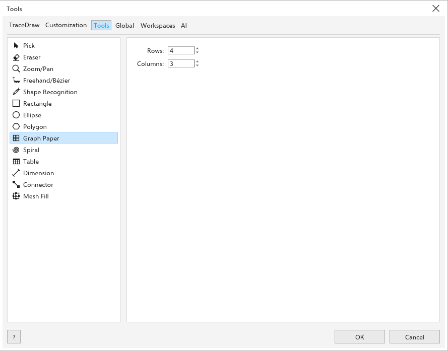
Filas y Columnas de la cuadrícula.
Espiral
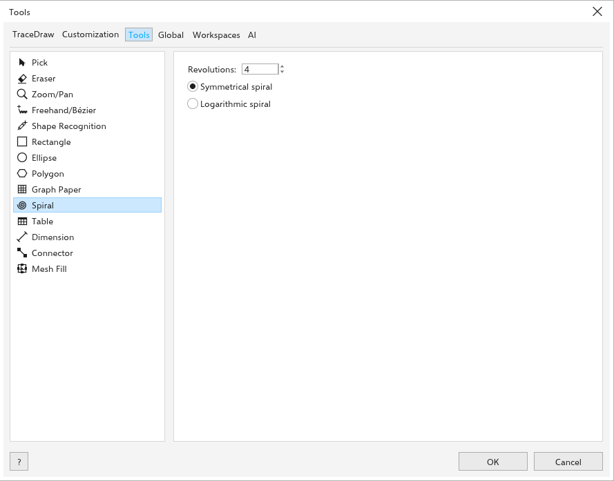
Revoluciones, y Espiral simétrica o Espiral logarítmica.
Tabla
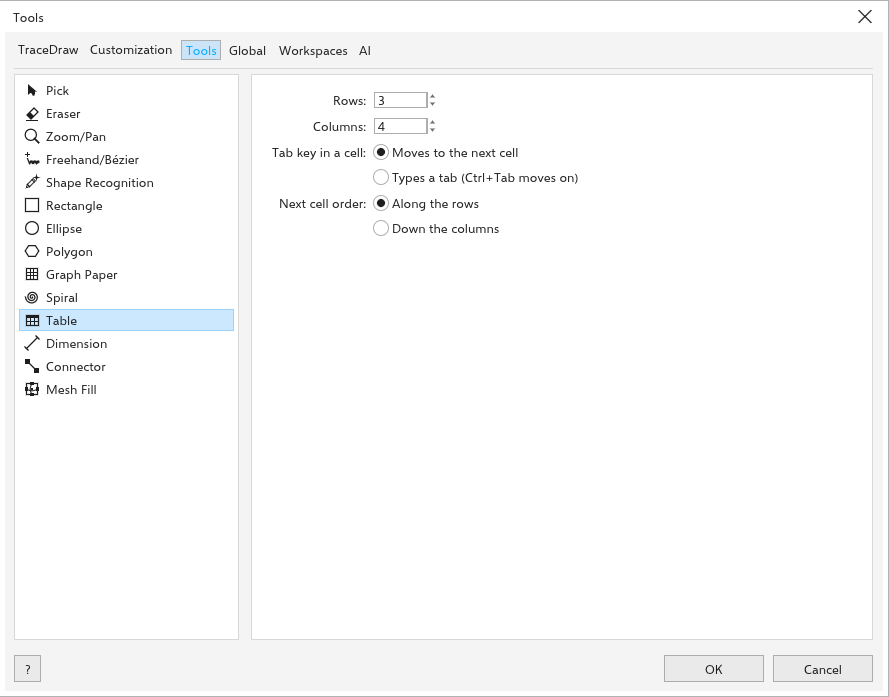
Filas y Columnas de las tablas nuevas.
Cota
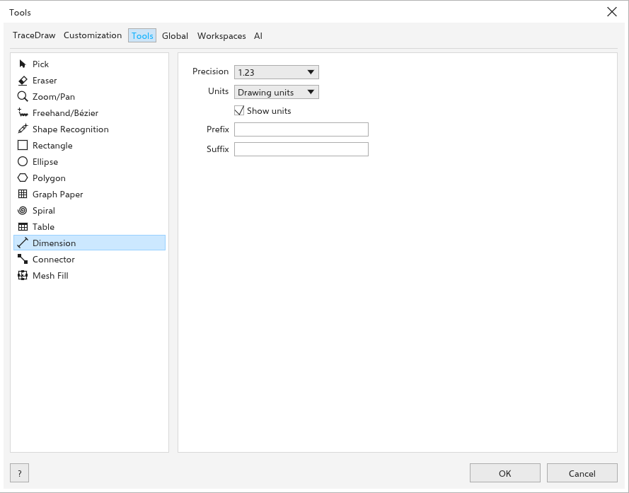
Cómo se lee la etiqueta de las cotas nuevas: Precisión, Unidades, Mostrar unidades, Prefijo y Sufijo. Las cotas ya dibujadas mantienen su etiqueta; seleccione una y use la barra de propiedades para cambiarla.
Conector
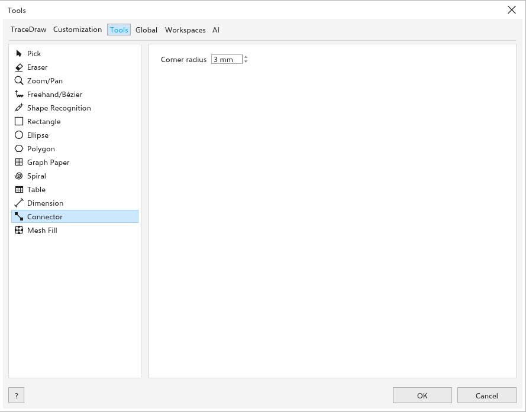
Radio de esquina de los conectores redondeados nuevos (3 mm al principio).
Relleno de malla
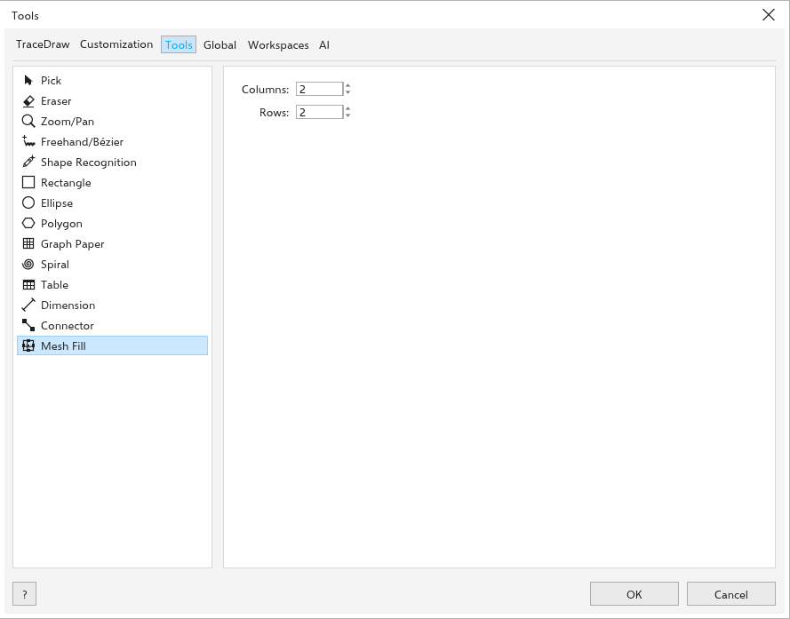
Columnas y Filas de la cuadrícula con la que empieza un relleno de malla nuevo (2 por 2 al principio).